Neural Procedural Memory：用隐式激活 steering 赋能 LLM Agent 程序记忆
[toc]
这篇论文讨论的是 LLM Agent 的“程序性记忆”该如何被表示。作者来自中科院自动化所、中国科学院大学，并有北京智源人工智能研究院合作；论文入口为 arXiv:2606.29824。它不是把记忆继续写成一段更长的自然语言提示，而是尝试把历史成功/失败经验蒸馏为 activation space 中的 steering vector，在推理时直接注入 residual stream，让模型更容易沿着正确的行动轨迹执行任务。代码状态方面，本轮只核验到论文与 arXiv 页面，未核验到独立公开代码仓库。
这篇工作值得放进 Agent memory 线索里看，是因为它把一个常见但容易被忽略的问题说得很清楚：文本记忆能告诉模型“应该怎么做”，却不一定能让模型真的在每一步动作上维持同样的内部状态。NPM 的切入点不是扩大上下文、写更多 workflow、或者微调模型参数，而是把程序技能视为一类可被表示、检索、合成并注入的神经方向。
当前 LLM Agent 缺少可持续复用的程序性记忆；把历史经验用 RAG 方式写成显式文本规则，可能让模型“读懂了规则”却没有激活执行这些规则所需的内部表征，最终在长序列任务里出现 text-action disconnect，漏掉关键中间步骤或进入错误动作循环。
1. 背景和问题
LLM 从静态问答器变成 Agent 控制器之后，任务难点发生了变化。静态问答更像是在一次上下文里完成推理，而 Agent 需要持续观察环境、选择动作、接收反馈、修正内部状态，再继续下一步。这个过程天然依赖记忆，但不同类型的记忆难度并不相同。论文把 agent memory 分成 declarative memory 和 procedural memory：前者是事实、偏好、约束这类可直接说出来的内容，例如“用户对花生严重过敏”；后者是“如何执行一串动作”的技能，例如“把碗放进柜子前要先清洗，清洗要找合适的工具和位置”。前者可以被文本检索和提示很好地表达，后者却不只是一个句子，而是一组需要在行动过程中持续保持的状态更新和动作偏置。
这也是本文对 RAG 式 agent memory 的主要批评。RAG 对事实记忆很合适，因为事实本身就是符号化、可复述、可检索的；但程序性记忆常常是隐式的、抽象的、难以完整 verbalize 的。一个 workflow 可以写得很清楚，例如“先找到物体，再去目标容器，再放置物体”，但模型真正执行时还要在每一步维护“我手里有什么”“哪些动作失败过”“下一步是否应该返回上一个地点”等内部状态。论文将这种现象称为 text-action disconnect：自然语言规则进入上下文，并不保证生成动作时相应的神经表征被稳定激活。
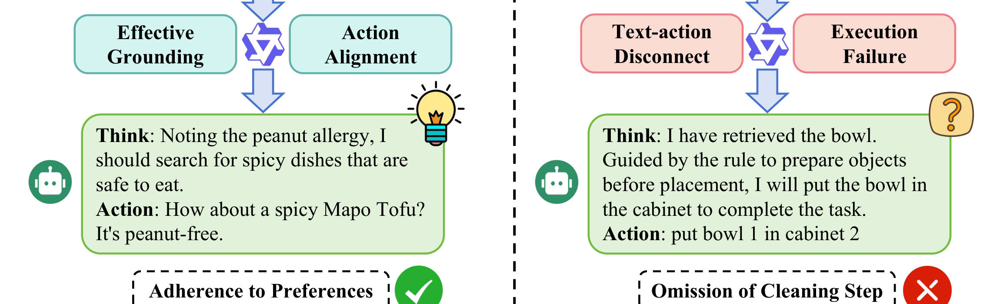
Figure 1 的完整原图用左右两类例子把这个问题拆开；这里截取的是原图中间的结果标签带，保留“Effective Grounding / Action Alignment”与“Text-action Disconnect / Execution Failure”的对照。左侧的 declarative memory 是静态偏好约束：用户过敏、偏好川菜，模型只要把事实读进上下文，就能在推荐 dinner 时避开花生并选择麻婆豆腐。这类场景里，文本记忆和动作输出之间距离很短，模型主要需要遵守一个条件。右侧的 procedural memory 则是“把碗清洗后放入柜子”的动作流程：文本规则写着要先把物体调整到目标状态再放置，但模型输出时只执行了“put bowl in cabinet”，漏掉清洗步骤。这个例子说明，程序性知识即使被明文检索出来，也可能没有转化成每一步 action selection 的内在动力。
从工程角度看，text-action disconnect 比普通“没检索到知识”更棘手。没检索到知识时，问题可能在召回、索引或上下文拼接；但 text-action disconnect 中，模型看到了规则，也可能在 thought 里提到规则，却仍然生成了错误动作。这意味着继续堆更多 textual memory 未必能解决问题，甚至会带来两个副作用：一是上下文变长，prefill 和注意力成本上升；二是规则之间可能互相覆盖，模型需要在更长的文本里判断哪一条当前可执行。
NPM 的核心问题因此可以表述为：能不能把程序性经验从“外部文本提示”转移到“内部表征调制”？如果历史任务里存在成功轨迹、失败轨迹，或者失败轨迹里存在有效步骤和退化步骤，那么这些对比中应该隐含着某种方向：从错误行为模式走向有效行为模式。论文选择在 hidden activation space 中提取这个方向，并在新任务推理时把它作为 steering vector 注入模型。这样做的目标不是让模型记住一段规则，而是让生成过程本身更偏向那些在历史任务中对应成功的行为 primitive。
这个思路和推荐系统也有类比价值。推荐系统里的用户长期兴趣、排序策略或多步召回链路，也常常不是一段文本就能完整表达的。很多线上策略更像“在某个状态下偏向某类行为、抑制某类失败模式”的隐式控制。NPM 提供的视角是：对长期记忆或策略记忆，不必总是把它外化成可读规则；有些记忆可以用可检索、可合成、可干预的向量形式存在。当然，这种做法要求能访问模型内部激活，所以它目前更适合开源模型或自托管 Agent，而不是只能调用封闭 API 的产品链路。
2. 方法
NPM 的方法线索按论文顺序可以分成四步：先从历史交互里构造对比经验，再把对比经验映射到 hidden state 表征，之后在推理时检索相似任务并合成 steering vector，最后用动态粒度选择和强度校准控制干预风险。整套方法是 training-free 的：不更新模型参数，不把经验继续写进更长的 prompt，而是把历史经验存成可以被检索的 activation-level memory。下面的解释会保持论文原始模块顺序，因为这篇工作的关键不是某一个 loss，而是“经验构造、表征抽取、推理注入、干预约束”四件事如何连成一条闭环。
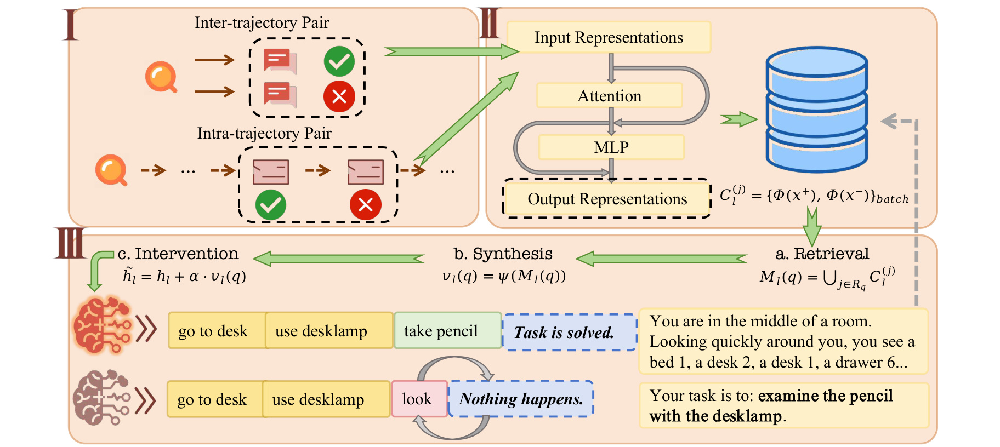
Figure 2 是整篇论文的方法主图。左上角先构造两类对比对：inter-trajectory pair 对齐成功轨迹和失败轨迹，intra-trajectory pair 则在一条失败轨迹内部区分有效步骤和退化步骤。右上角把这些文本轨迹送进模型，抽取输入/输出表征并存进记忆库。下半部分是推理时流程：新任务先检索相似历史任务，合成当前任务的 steering vector，再把它加到 residual stream 里。图里最关键的不是“多了一个数据库”，而是数据库里存的不是自然语言规则，而是正负表征对以及由它们导出的方向。换句话说，这张图把 NPM 和普通 RAG 的分界画得很清楚：检索仍然存在，但检索结果最终服务于内部激活调制，而不是服务于上下文拼接。
2.1 对比经验构造：从成功/失败轨迹到双粒度程序信号
论文把一次 Agent 交互看成状态和动作交替出现的轨迹，后续所有程序记忆都从这些轨迹里抽取。若同一个任务有成功轨迹和失败轨迹，NPM 构造 inter-trajectory contrast，用全局成功路径对齐全局失败路径；这一步关注的是“整条行为链应该往哪里偏”。对应公式如下：
符号解释：$T^+$ 是某任务的成功轨迹集合，$T^-$ 是失败轨迹集合，$\tau^+$ 和 $\tau^-$ 分别表示成功与失败尝试。这个公式的作用是把“全局行为差异”显式化：如果成功轨迹完成了清洗、拿取、放置，而失败轨迹漏掉某个步骤，那么两条轨迹的表征差异就可能包含“正确流程方向”。但论文也指出，很多复杂任务并不容易采到成功轨迹，因此 NPM 还在一条失败轨迹内部区分 effective steps 和 degenerate steps。退化步骤由重复命令、环境错误、动作格式无效等规则识别；剩余仍能推进状态的步骤则保留为正向局部信号：
符号解释：$S_{\mathrm{eff}}$ 是一条轨迹里的有效步骤集合，$S_{\mathrm{deg}}$ 是退化步骤集合。这个公式的直觉是，即使整条轨迹失败，也可能有一些局部步骤是合理的；把有效步骤和退化步骤对比，可以提取“局部纠错”方向。NPM 并不是把所有历史经验平均成一个方向，而是把“宏观流程”和“局部退化模式”分开建模，再在推理时选择合适粒度。 这也是它和 CAA、Mass-Mean 这类静态 mean-difference 方法的重要差异。
2.2 程序记忆抽取：把文本对比变成激活空间里的方向
有了对比经验后，论文要把文本轨迹映射到连续表征。核心目标是得到从退化状态 $h^-$ 指向理想状态 $h^+$ 的向量 $v\in\mathbb{R}^d$。对 inter-trajectory，对比的是完整轨迹，因此使用全轨迹 hidden states 的 last token 表征，捕获累积上下文；对 intra-trajectory，对比的是多个步骤集合，因此用 mean pooling 得到步骤级表征：
符号解释：$\phi_l(\cdot)$ 是第 $l$ 层的表征抽取函数，$S$ 是一个步骤集合，$s$ 是集合中的单个步骤，$|s|$ 是该步骤包含的 token 数，$h^{(s)}_{l,i}$ 是第 $l$ 层中步骤 $s$ 的第 $i$ 个 token activation。外层平均把多个步骤合成一个集合表征，内层平均把一个步骤的多个 token 合成一个步骤向量。这个公式说明，NPM 没有把一条自然语言规则当作记忆，而是把“步骤集合在模型内部产生的状态”当作记忆。每个历史任务会保存一组 layer-wise 正负表征对；这些对可以来自成功/失败轨迹，也可以来自有效/退化步骤。这样做的好处是存储量与原始轨迹长度脱钩：文本 RAG 要把历史 workflow 放回上下文窗口，长任务越多 prefill 越贵；NPM 只保存若干层的固定维度向量，论文估算 Qwen3-4B 每条轨迹约 45 KB。
2.3 推理时干预：检索、合成与 residual stream 注入
推理阶段，NPM 不修改模型权重，而是对当前任务动态生成 steering vector。给定新任务 $q$，系统先用 dense retriever 找到 top-K 相似历史任务，再把它们对应层的记忆池取出来。抽取函数 $\psi(\cdot)$ 会从检索到的正负表征对中合成当前任务的方向：
符号解释：$M_l(q)$ 是当前任务在第 $l$ 层检索到的候选程序记忆池，$v_l(q)$ 是第 $l$ 层针对当前任务 $q$ 的 steering vector，$\psi$ 表示从检索到的正负表征对中抽取共识方向的函数。论文实现里会先根据任务复杂度选择 inter 或 intra 粒度，再用 PCA 管线从 mean-centered representation 中取 dominant component。最后一步是 residual stream 干预：
符号解释：$h_{l,t}$ 是模型在第 $l$ 层、第 $t$ 个生成位置的原始 hidden state，$\tilde{h}_{l,t}$ 是干预后的 hidden state，$\alpha$ 是控制干预强度的标量，$v_l(q)$ 是当前任务的 steering vector。这个公式是 NPM 的核心机制：它把“应该朝成功轨迹靠近”的方向直接加到模型内部状态上，而不是把一段文本规则放进输入里等模型自己理解。这个设计的效果应当理解为“行为倾向调制”，不是硬规则执行。向量注入不会强制模型输出某个固定动作，而是让模型在生成时更容易激活与成功任务相关的 primitive，抑制与失败模式相关的 primitive。NPM 的核心机制就是把程序性记忆从 symbolic instruction 变成 activation-level bias。
2.4 动态粒度、强度校准与可解释性约束
论文没有固定使用某一种 steering 粒度，而是根据检索到的成功轨迹平均长度来选择：
符号解释：$g$ 是选择的干预粒度，$L_q$ 是当前任务检索到的成功轨迹平均执行长度，$\bar{L}$ 是该 benchmark 的全局平均轨迹长度，$\gamma$ 是阈值系数，论文实验中取 1.5。长任务更容易出现局部循环或 invalid action，因此使用 intra-trajectory 做局部纠错；短任务更可能是全局计划偏差，因此使用 inter-trajectory 做宏观对齐。干预强度则用 KL 约束校准：
符号解释：$A$ 是候选强度集合，$P(\cdot\mid x_{<t})$ 是未干预模型的 next-token distribution，$P_\alpha(\cdot\mid x_{<t})$ 是使用强度 $\alpha$ 干预后的分布，$\epsilon$ 是允许的最大 KL 偏移。这个公式体现了一个安全边界：NPM 希望 steering 足够强，能改变错误行为倾向；但又不能强到把模型原本的语言分布推得太远。为了分析向量到底在调制什么，论文还把 steering vector 投影到可解释 basis directions：
符号解释：$w_i$ 是通过 sparse dictionary learning 得到的单位范数 basis direction，$v$ 是 steering vector，$p_i$ 是 $v$ 在第 $i$ 个行为 primitive 上的投影。$p_i>0$ 表示放大该 primitive，$p_i<0$ 表示抑制该 primitive。这个公式把“向量加到 residual stream”转化为可解释问题：它究竟在增强搜索、最终放置、系统性检查，还是在抑制重复观察、错误回退、过早结束？这里也能看到论文方法的边界。NPM 使用的是单个或少数层的向量干预，并且同一段生成中向量相对静态；Agent 任务却往往阶段性很强，搜索、拿取、移动、放置阶段可能需要不同 primitive。论文在 limitation 中也承认，未来需要更动态的干预方式，让 steering vector 随执行阶段变化，而不是把一个合成方向持续加到每一步。
3. 实验结果
论文用四个 Agent benchmark 做评测：ALFWorld 是文本化家庭环境，关注物体导航和操作；WebShop 是电商网页交互，关注查询、浏览和选择商品；ScienceWorld 是科学实验环境，强调严格程序逻辑；BabyAI 是部分可观测 gridworld，强调空间移动和指令执行。模型包括 MiniCPM3-4B、Qwen3-4B 和 Qwen3-8B。指标上，ALFWorld 使用 success rate，其余三个环境使用 average reward。
实验设置里，NPM 和几类 baseline 对比：No Memory 是无记忆基线；Insights 和 Workflows 是显式文本记忆，前者提供全局经验原则，后者提供更结构化的执行流程；CAA 和 Mass-Mean 是静态 activation steering baseline；NPM 则动态检索相似历史经验并合成任务相关向量；Hybrid 是 NPM + Workflows，用来测试显式文本与隐式 steering 是否互补。
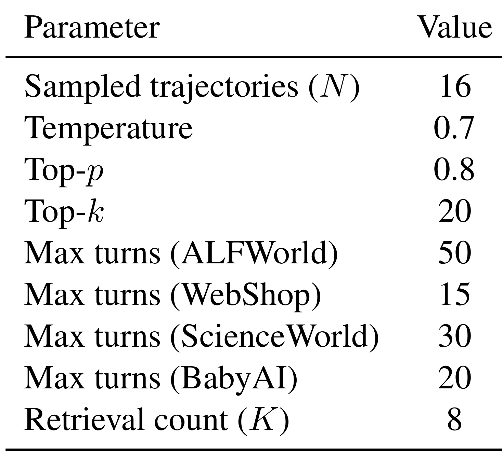
Table 2 给出数据构造参数：每个训练任务采样 16 条轨迹，temperature 为 0.7，top-p 为 0.8，top-k 为 20；ALFWorld、WebShop、ScienceWorld、BabyAI 的最大交互轮数分别是 50、15、30、20；推理时检索数量 $K=8$。这些参数决定了 NPM 记忆库里有多少历史对比信号，也影响失败轨迹是否足够丰富。需要注意的是，论文并不是在真实线上 Agent 环境中评估，而是在模拟 benchmark 上检验 activation-level procedural memory 的可行性；因此结果更像方法验证，而不是生产系统报告。这里的最大轮数差异也解释了为什么作者需要动态选择粒度：ALFWorld 和 ScienceWorld 的长交互更容易暴露局部循环，而 WebShop 的短交互更依赖搜索和属性匹配策略。
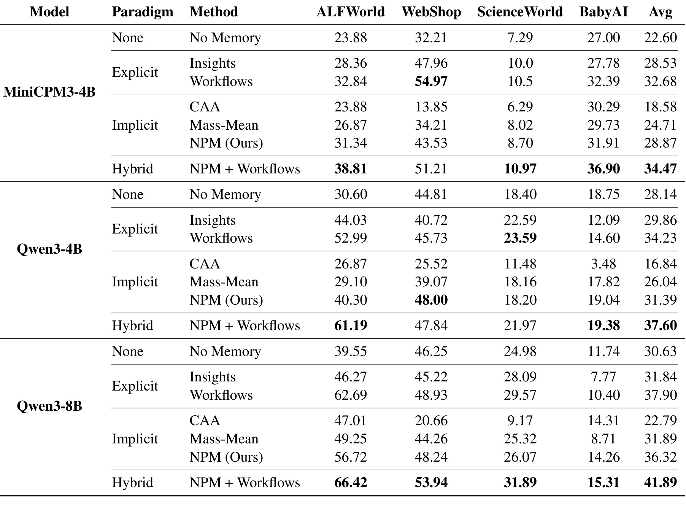
Table 1 是主结果。三个模型上，NPM 相比 No Memory 都有提升：MiniCPM3-4B 的平均分从 22.60 到 28.87，Qwen3-4B 从 28.14 到 31.39，Qwen3-8B 从 30.63 到 36.32。更重要的是，NPM + Workflows 在三个模型上都拿到最高平均分，分别是 34.47、37.60、41.89。这说明隐式 steering 和显式 workflow 并不是互相替代的关系：workflow 给模型高层符号步骤，NPM 则在内部表征层持续提供执行偏置。
表中也能看到 NPM 的细节价值。静态 implicit baseline 并不稳定，例如 CAA 在 MiniCPM3-4B 的 WebShop 上只有 13.85，远低于 No Memory；Mass-Mean 有时接近或超过无记忆，但整体不如 NPM。原因可能在于程序技能不是一个全局固定属性，不能像“诚实/有害”那样用一个跨任务平均方向处理。NPM 的检索式合成让方向依赖当前任务上下文，因此更适合多任务 Agent。与此同时，Workflows 在很多环境仍然很强，尤其在 ALFWorld 和 ScienceWorld 上提供明确步骤时效果突出；NPM 的价值不是证明文本记忆无用，而是证明文本记忆之外还有一条可互补路径。
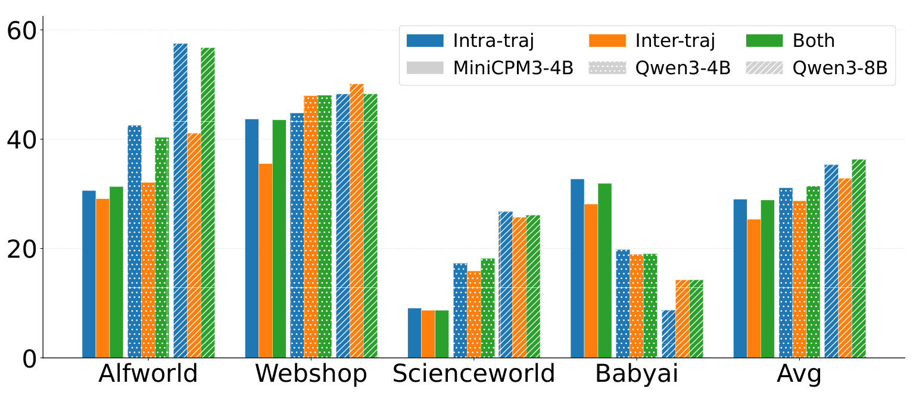
Figure 3 展示 inter-trajectory、intra-trajectory 和 combined steering 的差异。图中可以看到，不同环境和模型对粒度的偏好并不一致。ALFWorld 这类 step-intensive 任务里，局部动作错误、重复、invalid action 比较常见，intra-trajectory 的局部纠错更有意义；WebShop 这类需要宏观搜索和商品匹配的任务，更依赖 inter-trajectory 的全局行为对齐。combined 策略不是每一项都达到 oracle 最优，但平均上更稳。这支持论文的一个判断：程序记忆有“流程级”和“步骤级”两种形态，单一方向不足以覆盖所有任务。
表示分析部分首先检查一个前提：成功模式和失败模式在 hidden state 中是否真的可分。如果不可分，那么从正负对里抽取 steering vector 就很难成立。
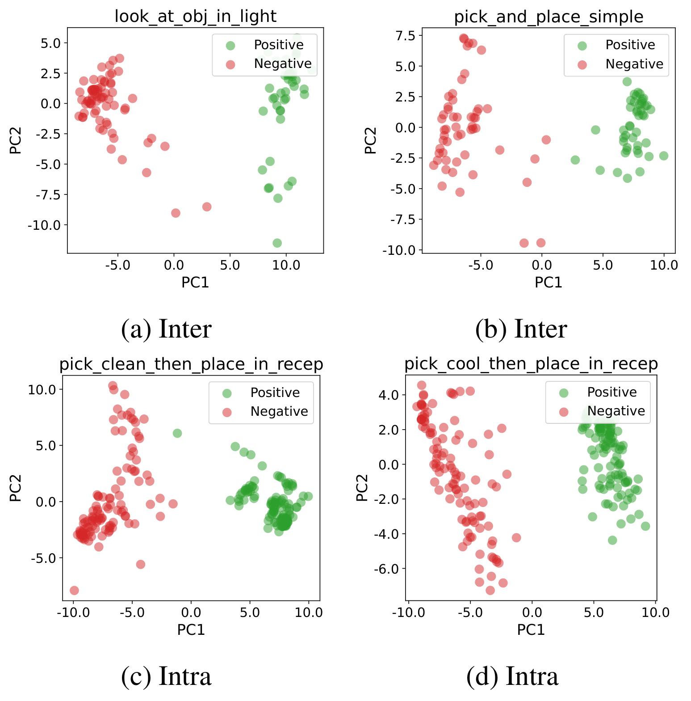
Figure 4 把 Qwen3-4B 在 ALFWorld 中的正负表示投影到 PCA 主轴上。绿色代表正向/有效表示，红色代表负向/失败表示，四个子图分别覆盖不同任务和 inter/intra 粒度。可见多数场景里红绿点云沿主轴有明显分离，尤其是 pick_and_place_simple、pick_clean_then_place_in_recep 等任务。这并不等价于“所有失败都能线性修正”，但至少说明 activation space 中存在可被抽取的方向，NPM 的 PCA/dominant component 操作不是无根据的。更谨慎地说，这张图证明的是方向候选存在，而不是证明每次注入都会安全；真正的安全性仍要结合检索质量、强度校准和任务阶段。
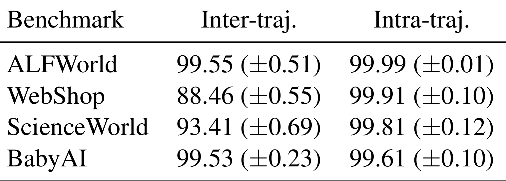
Table 4 用线性 SVM 在原始高维 hidden states 上验证这个现象。intra-trajectory 的分类准确率几乎都接近 100%，inter-trajectory 在 ALFWorld 和 BabyAI 也超过 99%，WebShop 的 inter-trajectory 相对低一些，为 88.46。这和前面的任务直觉一致：WebShop 的失败不总是简单动作错误，可能来自商品属性匹配、页面导航和检索策略，宏观成功/失败差异更分散。这个结果支持“activation steering 可行”，但也提醒我们：不同环境的可分性差异会影响 NPM 的稳定性。它还解释了为什么论文不能只报告平均分：如果某个环境的正负表征本来就混杂，steering vector 的方向会更容易受噪声影响。
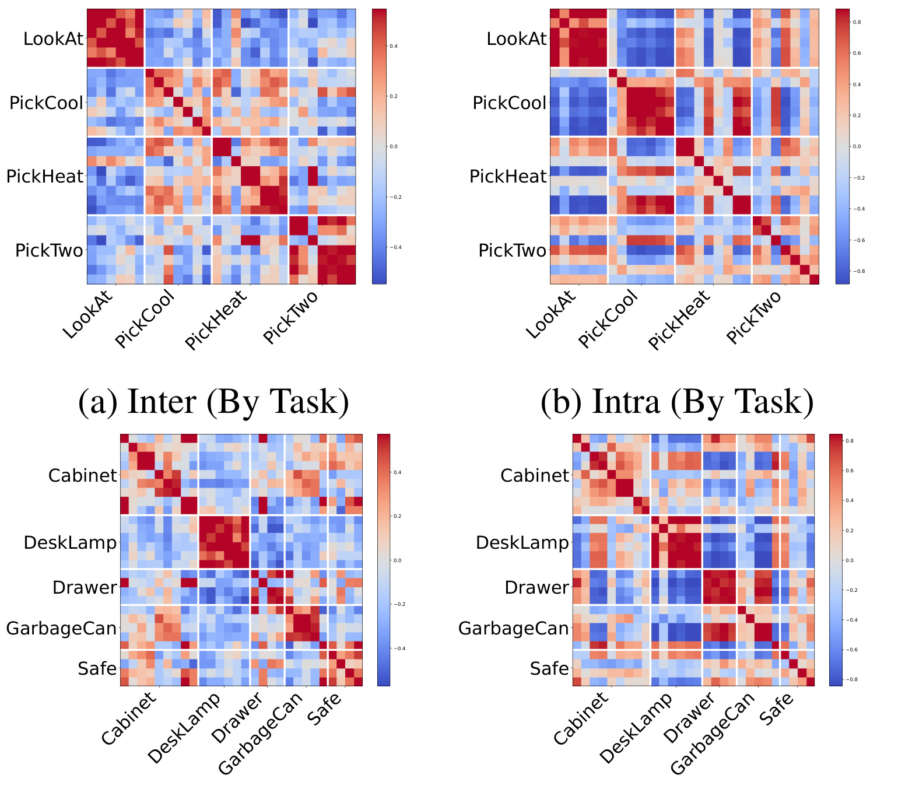
Figure 5 进一步看 steering vector 之间的 cosine similarity。按任务类型聚类时，LookAt、PickCool、PickHeat、PickTwo 等类别内部形成更强块状结构；按 interaction target 聚类时，Cabinet、DeskLamp、Drawer、GarbageCan、Safe 等目标也有一定一致性。这个图的意义是：NPM 抽出的向量不是完全随机的任务噪声，而是带有可复用结构。对 Agent 系统来说，这很重要，因为如果每个任务的 steering vector 都只在单例上有效，就无法称为程序性记忆；只有当同类任务或同类交互目标共享方向时，记忆库才有迁移价值。同时，热力图中仍有蓝色和浅色块，说明不同任务之间存在冲突或低相似度，实际部署时不能把所有经验无差别合并。
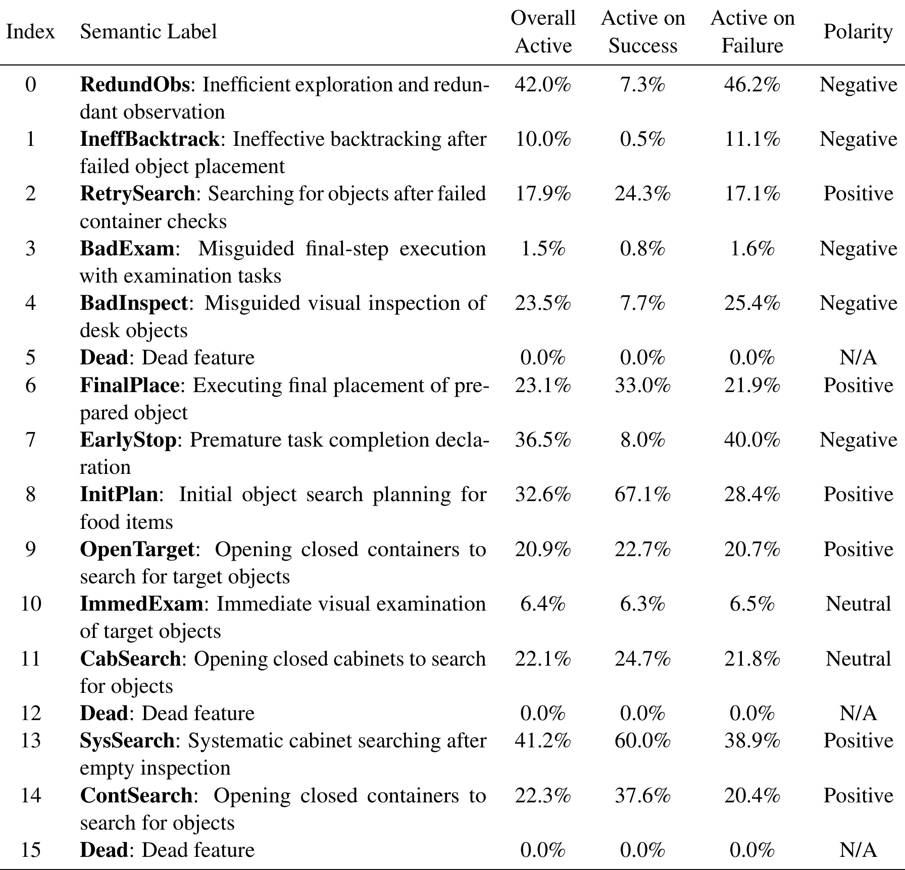
Table 3 把 learned basis direction 映射成可读行为 primitive，例如 RedundObs 表示低效探索和重复观察，在失败轨迹中激活率 46.2%，是负向；FinalPlace 表示执行已准备物体的最终放置，在成功轨迹中激活率 33.0%，是正向；EarlyStop 表示过早声明任务完成，在失败轨迹中激活率 40.0%，是负向；SysSearch 表示空检查后的系统化柜子搜索，在成功轨迹中激活率 60.0%，是正向。这个表让 NPM 的“向量”更容易被解释：它不是抽象地提高某个分数，而是在放大或抑制具体行为原语。对调试来说，这类标签很有用，因为它能帮助开发者判断一次 steering 失败究竟是检索错了任务，还是放大了不该放大的 primitive。
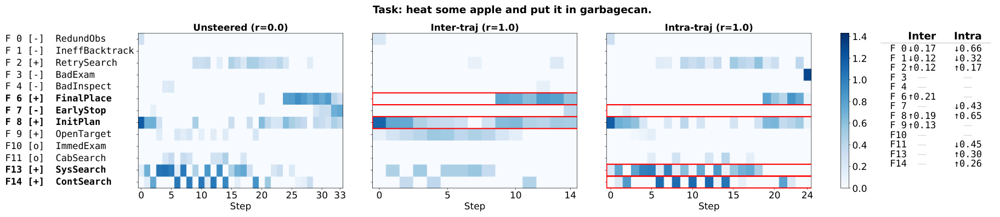
Figure 6 展示一个 PickHeat 任务。未 steering 的 baseline 路径长达 33 步，说明它在搜索或执行中出现拖延和循环；inter-trajectory steering 后，和 FinalPlace、InitPlan 等正向 primitive 相关的激活变得更明显，轨迹缩短；intra-trajectory steering 则更突出 SysSearch、ContSearch 这类局部纠错和系统化搜索 primitive。右侧小表显示了不同特征的增减方向。这个例子解释了 NPM 为什么可能比文本 workflow 更适合长序列：它在生成过程中持续改变 primitive 的激活强度，而不是只在开头提醒一次。它也说明两类粒度的目标不同：一个偏向压缩整体路径，一个偏向在局部失败后恢复搜索纪律。
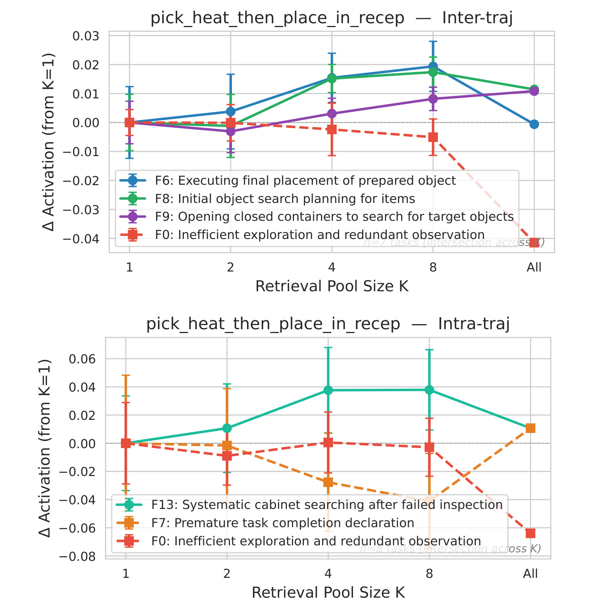
Figure 7 看 retrieval pool size $K$ 对 activation delta 的影响。上图是 inter-trajectory，下图是 intra-trajectory。可以看到，随着 $K$ 从 1 增加到 4 或 8，一些正向 primitive 的激活增强，而负向 primitive 被压低；但到 All 时并不总是继续变好。这说明检索更多历史经验不一定单调提升，过大的池子可能把不相关任务也混入共识方向。对实际系统来说，这提醒我们 NPM 的 retrieval 仍然是关键组件：如果召回质量差，activation steering 的方向也会被污染。
论文还专门检查 intra-trajectory 中用来识别 degenerate steps 的规则是否可靠。因为如果退化步骤标错，负样本池就会混进有效行为，steering direction 会被拉偏。
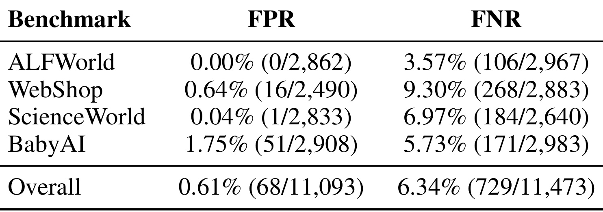
Table 5 报告了 FPR 和 FNR。整体 FPR 是 0.61%，FNR 是 6.34%，说明规则比较保守，误把有效步骤标成退化步骤的概率较低；但 FNR 不为零，尤其 WebShop 达到 9.30%，说明还有不少隐性错误没有被规则识别出来。这个结果对方法评价很重要：NPM 的 intra-trajectory 信号不是完美监督，而是启发式标注。它能提供有用方向，但在需要细粒度语义判断的网页购物场景里，简单的重复/无效动作规则可能漏掉“看似合法但策略错误”的动作。
效率部分是 NPM 相对文本记忆的另一个卖点。显式 workflow 要进入 context window，长文本会抬高 prefill 成本；NPM 则只在 residual stream 做向量加法，但需要额外的检索、向量合成和强度 probe。
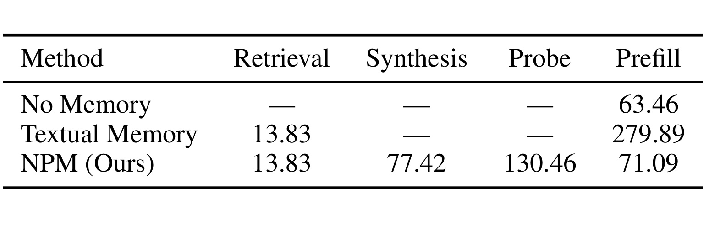
Table 6 显示 No Memory 的 prefill 是 63.46 ms，Textual Memory 的 prefill 升到 279.89 ms；NPM 的 prefill 是 71.09 ms，接近无记忆基线。NPM 额外有 retrieval 13.83 ms、synthesis 77.42 ms、probe 130.46 ms，但这些不是把大段文本塞进上下文造成的注意力开销。论文据此认为，activation steering 对长上下文压力更小。这个结论成立的前提是系统能接受一次额外 probe，并且能访问模型内部层；在封闭 API 或极低延迟线上场景中，这部分仍需重新评估。
最后看定性案例。论文选择了一个“找到两个 CD 并放入 safe”的任务，用来展示 text-action disconnect。
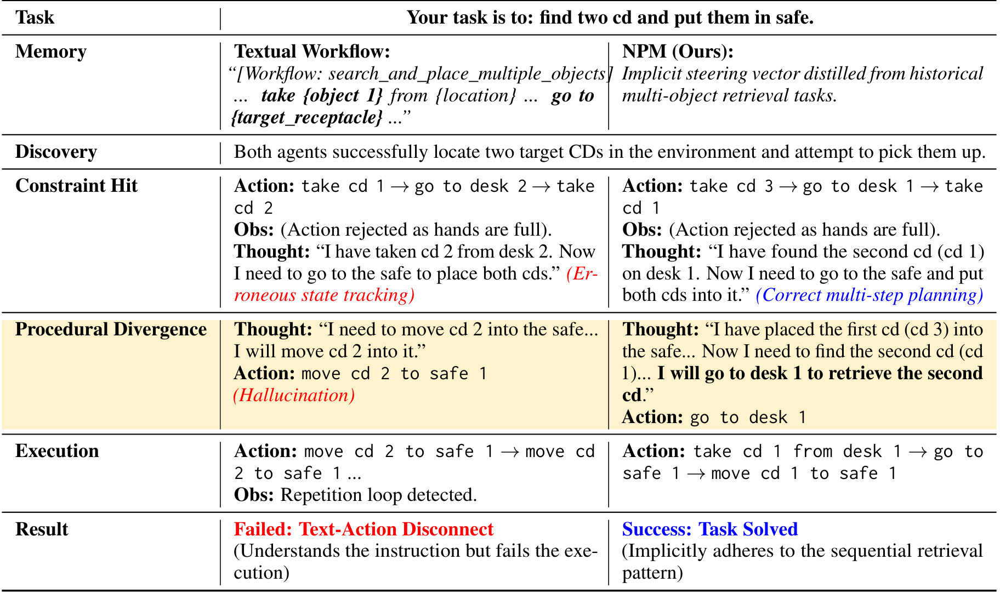
Table 7 中，两种 agent 都先找到两个 CD，但当第二次拿取因为“手已满”被环境拒绝时，显式 workflow agent 没有正确更新内部状态，仍以为自己已经拿到了第二个 CD，于是反复尝试移动不存在于手中的物品，进入失败循环。NPM agent 则在同样遭遇拒绝后，先把第一个 CD 放进 safe，再回去拿第二个 CD，最终完成任务。这个案例非常贴近论文的核心论点：workflow 文本可以告诉模型“多物体检索需要重复拿取和放置”，但真正执行时，模型还必须持续维护状态。NPM 的隐式 steering 更像是在内部强化“顺序检索、遇到约束后回退并继续”的程序模式。
综合这些实验，NPM 的证据链是比较完整的：主结果说明它提升平均表现，Hybrid 说明它和显式文本互补；粒度实验说明 inter/intra 各有适用场景；PCA、SVM、cosine heatmap、basis annotation 说明 steering vector 有可分性和可解释结构；延迟表说明它避开了长文本 prefill 的一部分成本；case study 则回到 text-action disconnect。它还不是一个生产级 memory system，因为冷启动、封闭模型、动态阶段切换都没有完全解决，但作为“程序性记忆不一定要写成文本”的方法验证，论文的实验是连贯的。
4. 总结
NPM 的最大价值在于把 Agent memory 的讨论从“记住什么文本”推进到“激活什么行为状态”。过去很多 Agent 系统把历史经验总结成 reflection、insight、workflow 或 rule，再通过 RAG 放回上下文。这种方法可读、可调、易于调试，但它默认模型会把规则稳定转成动作。NPM 反过来指出：程序性记忆本来就未必适合完全 verbalize，它更像一种 action-conditioned internal modulation。对需要长序列状态维护的 Agent，这个观点很有启发。
从方法上看，论文最值得借鉴的是双粒度对比。inter-trajectory 捕捉成功/失败轨迹之间的全局差异，适合计划层面；intra-trajectory 在失败轨迹中分离有效步骤和退化步骤，适合局部纠错。这个设计减轻了“必须有成功轨迹”的依赖，也让系统能从失败中学习。但它仍然有冷启动问题：如果某类任务历史经验太少，或者失败轨迹里的退化步骤不能被简单规则识别，memory repository 的质量会下降。
工程落地上，我会把 NPM 看成显式 workflow 的补充，而不是替代。论文主结果里 Hybrid 最强，说明文本步骤和激活 steering 各有职责：文本 workflow 提供可解释的高层计划，activation steering 提供持续的内部执行偏置。对一个真实 Agent 系统来说，比较合理的路线可能是：先用显式 memory 保证可控和可审计，再对高频、长序列、重复失败的任务收集对比轨迹，逐步加入 activation-level procedural memory。
局限也很明确。第一，NPM 需要访问 residual stream 和中间层 activation，因此封闭 API 模型无法直接使用。第二，历史记忆库依赖采样轨迹，复杂任务一开始没有足够成功样本，inter-trajectory 信号会弱。第三，intra-trajectory 的退化步骤识别使用规则，能抓住重复和 invalid action，但难以识别“语义上错误但格式合法”的动作。第四，当前向量在生成过程中相对静态，无法按执行阶段精细切换；多阶段任务可能需要 state-dependent steering。第五，实验仍是模拟 benchmark，尚未证明在真实浏览器、真实工具调用、多人协作或长时间会话中同样稳定。
后续我会重点跟进三条线索。第一，看是否有工作把 NPM 和更强的 trajectory evaluator 结合，用模型判别或环境 reward 替代简单退化规则，降低 WebShop 这类场景的漏检。第二，看是否有人做 dynamic steering schedule，让不同阶段使用不同 primitive，而不是一个方向贯穿整段生成。第三，看它能否和推荐系统里的长期用户行为记忆、策略 replay 或在线反馈结合：比如把“某类用户在某类上下文下容易触发的排序/召回失败模式”转成可检索的向量偏置，而不仅是写成策略文档。总体来说，这篇论文的结论不应被夸成“文本记忆失效”，更准确的说法是：当记忆对象是程序技能时，文本是一个必要但不充分的载体，activation-level procedural memory 可能是下一类值得系统化研究的 Agent 记忆表示。